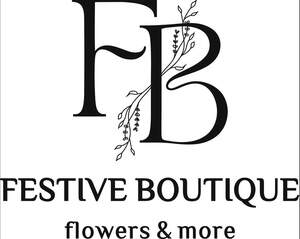

Trade Mark Journal No.2025/041 10 October 2025
UK00004268881 24 September 2025 (35,44)

- Class 35
- Retail and wholesale services in relation to cut flowers, flower bouquets, floral arrangements, dried flowers, potted plants, vases, flowerpots, soil, fertilizers, plant food, plant care products, watering devices, plant stands, candles, aromatic products, home fragrance products, floral gift sets and floral accessories; including such services provided via websites, online platforms, social media, printed catalogues, mail order, telecommunications, and other media-based means of distribution; administrative processing of purchase orders; organisation of exhibitions of flowers and plants for commercial or advertising purposes; floral window dressing and decoration services for retail and commercial premises; providing commercial information and advice for consumers in the choice of products and services; creation and management of gift registries and personalised gift selections for customers; online advertising services relating to floral products and home fragrance goods.
- Class 44
- Floristry; flower arranging; floral design services; flower arrangement design for interior and event decoration; wreath making; hire of floral decorations and flower arrangements for special events; hiring of flowers; advisory services relating to the maintenance and decorative use of cut flowers and potted plants; plant care services; consultancy in the field of floral styling and interior floral design; providing information and advice in the field of floristry via websites and social media.
Alina Kriuchkova